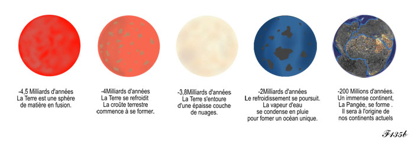
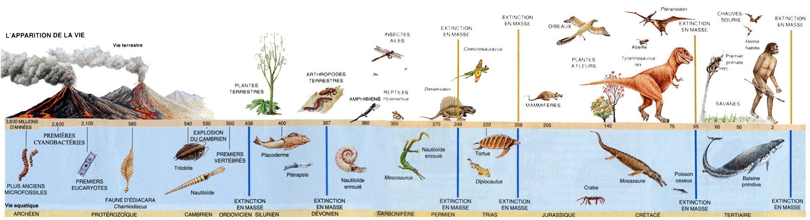

MACLASSE.COM

Voici un cours qui explique le passé de l'homme depuis son apparition (homo habilis).
Les élèves se heurtent souvent à la notion des temps géologiques et de l'apparition des espèces et de l'homme. Voici quelques documents animés ou vidéos, plutôt niveau collège, mais qui pourront répondre à certaines interrogations.
Voici une petite animation qui montre l'évolution de la terre sur 24h depuis son apparition il y a 4,8 milliards d'années (0h00) j'usqu'à aujourd'hui (24h00).
Animation de l'évolution de la terre
Voici une vidéo retraçant les étapes de la formation de la terre
Un petit dessin animé sur l'origine de la vie
Toumaï est le nom donné au premier homme. Il vivait il y a 7 millions d'années, mesurait un mètre pour 35kg. De ce que nous savons, il aurait vécu dans une forêt pas loin d'un point d'eau.
Au départ, ils étaient comme des grands singes mais ont du évoluer à cause des changements de leur habitat. Leur forêt ayant disparu pour laisser place à la savane.
Son nom vient de sa grande "habileté" pour fabriquer des outils. Ce qui le distingue de l'australopithèque. L'avantage est qu'il peut désormais découper la viande en morceaux et casser des os. Ils vivaient dans des sortes de cabanes rondes et devaient vivre entre 30 et 40 ans.
Il fût découvert en 1891, on l'appela "erectus" car nous pensions qu'il avait une posture humaine. Ce qui malheureusement était faux, mais son nom resta inchangé. Il maîtrisait parfaitement la taille de la pierre. Pour vivre il chassait, pêchait et faisait la cuiellette. Ils étaient organisé en tribus et vivaient en campements. C'est aussi le premier à maîtriser le feu.
Après de nombreuses études, nous sommes capable de déterminer l'alimentation de l'homme de néandertal. Sa base reste la viande mais vient s'ajouter des coquillages, des mollusques, des phoques et des végétaux. Beaucoup d'outils fût découvertdans leur environnement : pointe, lance ...
Celui qu'on connaît le mieux, puisqu'il s'agit de nous. Mais avec les dernières découvertes de 2017, nous avons pu constater que le squellette ne corespond pas exactement les mêmes que ceux d'aujourd'hui ... Nous sommes donc en évolution constante ...
Charles Darwin est un biologiste britanique qui fût à l'origine de la théorie de l'évolution de l'espèces. Il observa que les êtres vivants sont parfaitement adapté à son milieu, mais les êtres vivants les plus adaptés ont de meilleures chances de survivre et possèdent plus de chance de transmettre à ses enfants les caractères qui font qu'ils s'adapteront encore mieux.
Voici une vidéo qui explique sa théorie :
Tout commenca avec le BIG BANG, une grande explosion qui donna naissance à notre univers. Grâce à cela, tout se créa : l'univers, les galaxies, les étoiles, les planètes et nous.
La vie fera son apparision bien plus tard sous forme de cellules d'organismes, de bactéries. Après plusieurs mutation, nous passons d'un à plusieurs cellules (méduses, algues ...)
A partir de la tout s'enchaîne avec l'apparition de certains invertébrés marins, puis les animaux commencent à sortir de l'eau. Après plusieurs catastrophes le niveaux des eaux baissent et seulement quelques reptiles survivent. Nous voyons donc apparaitre la branche des mammifères avec comme caractéristiques le sang chaud et les poils. Nous allons connaitre l'apparition des dinosaures.
Les dinosaures domineront notre planète, mais avec une forte activité volcanique et une météorite qui heurta la Terre, cette espèce va disparaître. Un vide écologique se mis en place pour laisser le terrain aux mammifères, les primates puis bien longtemps après l'Homme.

Mentions légales / Qui sommes-nous ? / Plan du site
Nos matières : français - mathématiques - histoire - sciences - arts visuels